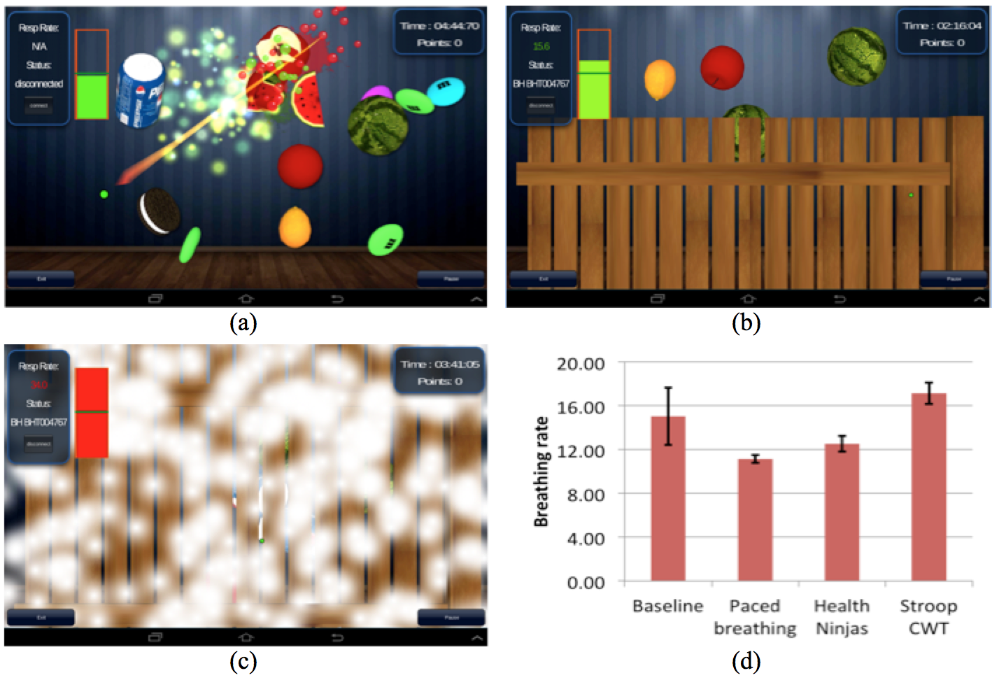

Research / Health Ninja

Independently developed a mobile game to integrate health education into biofeedback treatment
for childhood obesity.
Designed algorithms to dynamically adapt the game scenario based on physiologoical data.
Designed experimental protocols and conducted user studies at local children community